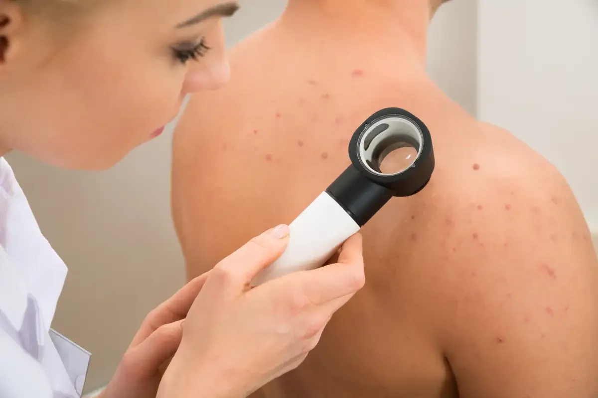

Existem várias medidas que você pode adotar para se prevenir dos raios UV e proteger sua pele:
→ Use protetor solar: Aplique um protetor solar de amplo espectro, com FPS de pelo menos 30, em todas as áreas expostas da pele. Reaplique a cada duas horas ou com mais frequência se estiver nadando, suando ou se secar com uma toalha. Clique aqui para ser redirecionado para a compra de um protetor solar.
→ Use óculos de sol com proteção UV: Certifique-se de que seus óculos de sol tenham proteção contra raios UV para proteger seus olhos dos danos causados pela exposição aos raios UV. Clique aqui para ser redirecionado para a compra de um óculos com proteção UV.
→ Realize exames regulares da pele: Fique atento a quaisquer alterações na sua pele, como manchas novas, mudanças de cor, crescimentos suspeitos ou lesões que não cicatrizam. Se notar algo incomum, consulte um dermatologista.
